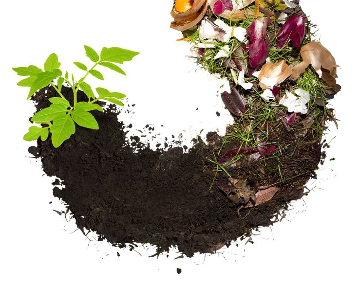
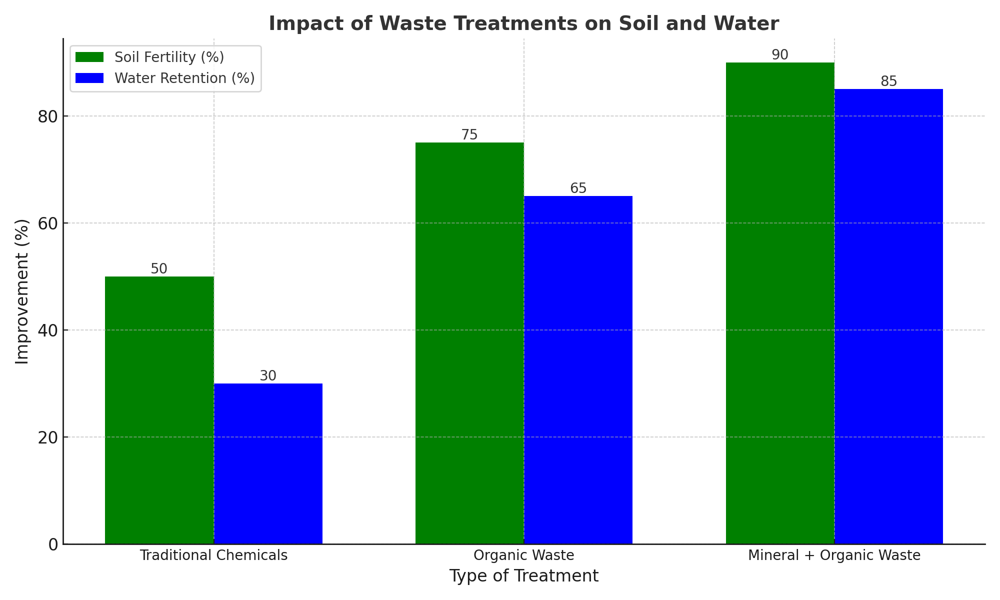

تحويل النفايات إلى ثروة مستدامة من أجل المستقبل
Waste2Wealth هو مشروع مبتكر يهدف إلى إعادة تدوير النفايات العضوية والمعدنية لإنتاج مواد مستدامة لتحسين التربة واستصلاح الأراضي الصحراوية.
نعتمد على دمج النفايات العضوية مثل بقايا الطعام مع النفايات المعدنية مثل غبار الخرسانة. تتم معالجة هذه المواد باستخدام التحلل الحيوي من خلال الكائنات الدقيقة مثل البكتيريا والفطريات لإطلاق العناصر الغذائية اللازمة.
تركز أبحاثنا على تحسين خصوبة التربة وزيادة قدرتها على الاحتفاظ بالمياه باستخدام النفايات العضوية والمعدنية، وهو أمر بالغ الأهمية للزراعة في المناطق الصحراوية.
ساهم معنا في تحويل النفايات إلى ثروة! تبرعك يساعدنا في توسيع مهمتنا لإيجاد حلول مستدامة.